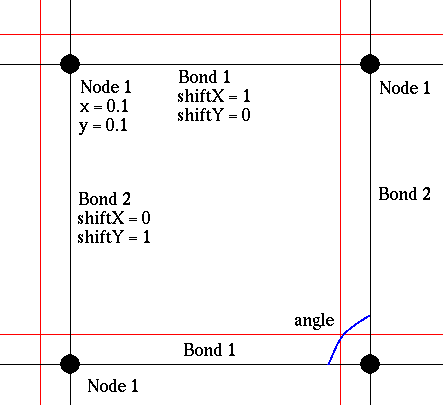
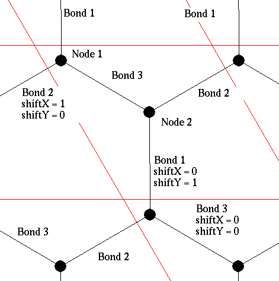

Словарик
Мы тут иногда пользуемся всякими непонятными и необщепринятыми словами. На этой странице примерно написано что это вообще такое. Кроме того, именно здесь записано то важное обстоятельство, что отсчёт координат у нас идёт «сверху»-«слева» вдоль границ элементарной ячейки.
Нода — узел (вершина) кристалла.
Бонд или бонда — ребро, связь в кристалле.
Шифт или смещение — в какой элементарной ячейке искать ноду, в которую идёт бонд. Дело в том, что несмотря на то, что рёбра сами по себе направленными быть никак не могут, у нас в программе в любом внутреннем представлении они направленными являются (хотя их направление можно легко изменить. Тогда надо изменять знак и у всех шифтов). И чтобы понять, в какой элементарной ячейке находится конечная точка относительно начальной точки, используются шифты. Скажем, на первой картинке (красным показаны границы элементарной ячейки) первое ребро идёт слева направо и имеет shiftX=1, а на второй картинке первое ребро идёт сверху вниз, имея shiftY=1, а третье ребро идёт полностью в одной элементарной ячейке, и имеет оба смещения равными нулю. А если изменить направление второго ребра на второй картинке, то его смещение будет равно (-1, 0).

